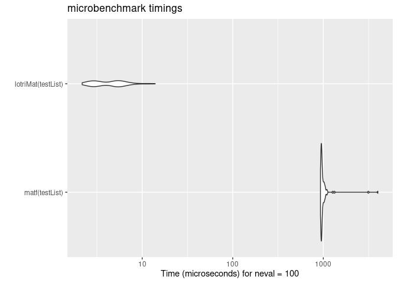

The goal of lotri is to easily specify block-diagonal matrices with (lo)wer (tri)angular matrices. Its as if you have won the (badly spelled) lotri (or lottery).
This was made to allow people (like me) to specify lower triangular matrices similar to the domain specific language implemented in nlmixr2. Originally I had it included in RxODE, but thought it may have more general applicability, so I separated it into a new package.
Installation
You can install the released version of lotri from CRAN with:
install.packages("lotri")And the development version from GitHub with:
# install.packages("devtools")
devtools::install_github("nlmixr2/lotri")Example
This is a basic example for an easier way to specify matrices in R. For instance to fully specify a simple 2x2 matrix, in R you specify:
With lotri, you simply specify:
library(lotri)
library(microbenchmark)
library(ggplot2)
mat <- lotri(a+b ~ c(1,
0.5, 1))
print(mat)
#> a b
#> a 1.0 0.5
#> b 0.5 1.0I find it more legible and easier to specify, especially if you have a more complex matrix. For instance with the more complex matrix:
mat <- lotri({
a+b ~ c(1,
0.5, 1)
c ~ 1
d +e ~ c(1,
0.5, 1)
})
print(mat)
#> a b c d e
#> a 1.0 0.5 0 0.0 0.0
#> b 0.5 1.0 0 0.0 0.0
#> c 0.0 0.0 1 0.0 0.0
#> d 0.0 0.0 0 1.0 0.5
#> e 0.0 0.0 0 0.5 1.0To fully specify this in base R you would need to use:
mat <- matrix(c(1, 0.5, 0, 0, 0,
0.5, 1, 0, 0, 0,
0, 0, 1, 0, 0,
0, 0, 0, 1, 0.5,
0, 0, 0, 0.5, 1),
nrow=5, ncol=5,
dimnames= list(c("a", "b", "c", "d", "e"),
c("a", "b", "c", "d", "e")))
print(mat)
#> a b c d e
#> a 1.0 0.5 0 0.0 0.0
#> b 0.5 1.0 0 0.0 0.0
#> c 0.0 0.0 1 0.0 0.0
#> d 0.0 0.0 0 1.0 0.5
#> e 0.0 0.0 0 0.5 1.0Of course with the excellent Matrix package this is a bit easier:
library(Matrix)
mat <- matrix(c(1, 0.5, 0.5, 1),
nrow=2,
ncol=2,
dimnames=list(c("a", "b"), c("a", "b")))
mat <- bdiag(list(mat, matrix(1), mat))
## Convert back to standard matrix
mat <- as.matrix(mat)
##
dimnames(mat) <- list(c("a", "b", "c", "d", "e"),
c("a", "b", "c", "d", "e"))
print(mat)
#> a b c d e
#> a 1.0 0.5 0 0.0 0.0
#> b 0.5 1.0 0 0.0 0.0
#> c 0.0 0.0 1 0.0 0.0
#> d 0.0 0.0 0 1.0 0.5
#> e 0.0 0.0 0 0.5 1.0Regardless, I think lotri is a bit easier to use.
Creating lists of matricies with attached properties
lotri also allows lists of matrices to be created by conditioning on an id with the | syntax.
For example:
mat <- lotri({
a+b ~ c(1,
0.5, 1) | id
c ~ 1 | occ
d + e ~ c(1,
0.5, 1) | id(lower=3, upper=2, omegaIsChol=FALSE)
})
print(mat)
#> $id
#> d e
#> d 1.0 0.5
#> e 0.5 1.0
#>
#> $occ
#> c
#> c 1
#>
#> Properties: lower, upper, omegaIsChol
print(mat$lower)
#> $id
#> d e
#> 3 3
#>
#> $occ
#> c
#> -Inf
print(mat$upper)
#> $id
#> d e
#> 2 2
#>
#> $occ
#> c
#> Inf
print(mat$omegaIsChol)
#> $id
#> [1] FALSEThis gives a list of matrix(es) conditioned on the variable after the |. It also can add properties to each list that can be accessible after the list of matrices is returned, as shown in the above example. To do this, you simply have to enclose the properties after the conditional variable. That is et1 ~ id(lower=3).
Combining symmetric (named) matrices
Now there is even a faster way to do a similar banded matrix concatenation with lotriMat
testList <- list(lotri({et2 + et3 + et4 ~ c(40,
0.1, 20,
0.1, 0.1, 30)}),
lotri(et5 ~ 6),
lotri(et1+et6 ~c(0.1, 0.01, 1)),
matrix(c(1L, 0L, 0L, 1L), 2, 2,
dimnames=list(c("et7", "et8"),
c("et7", "et8"))))
matf <- function(.mats){
.omega <- as.matrix(Matrix::bdiag(.mats))
.d <- unlist(lapply(seq_along(.mats),
function(x) {
dimnames(.mats[[x]])[2]
}))
dimnames(.omega) <- list(.d, .d)
return(.omega)
}
print(matf(testList))
#> et2 et3 et4 et5 et1 et6 et7 et8
#> et2 40.0 0.1 0.1 0 0.00 0.00 0 0
#> et3 0.1 20.0 0.1 0 0.00 0.00 0 0
#> et4 0.1 0.1 30.0 0 0.00 0.00 0 0
#> et5 0.0 0.0 0.0 6 0.00 0.00 0 0
#> et1 0.0 0.0 0.0 0 0.10 0.01 0 0
#> et6 0.0 0.0 0.0 0 0.01 1.00 0 0
#> et7 0.0 0.0 0.0 0 0.00 0.00 1 0
#> et8 0.0 0.0 0.0 0 0.00 0.00 0 1
print(lotriMat(testList))
#> et2 et3 et4 et5 et1 et6 et7 et8
#> et2 40.0 0.1 0.1 0 0.00 0.00 0 0
#> et3 0.1 20.0 0.1 0 0.00 0.00 0 0
#> et4 0.1 0.1 30.0 0 0.00 0.00 0 0
#> et5 0.0 0.0 0.0 6 0.00 0.00 0 0
#> et1 0.0 0.0 0.0 0 0.10 0.01 0 0
#> et6 0.0 0.0 0.0 0 0.01 1.00 0 0
#> et7 0.0 0.0 0.0 0 0.00 0.00 1 0
#> et8 0.0 0.0 0.0 0 0.00 0.00 0 1
mb <- microbenchmark(matf(testList),lotriMat(testList))
print(mb)
#> Unit: microseconds
#> expr min lq mean median uq max neval
#> matf(testList) 459.374 475.9100 547.68401 482.1740 508.6945 4345.639 100
#> lotriMat(testList) 2.389 2.9465 4.41056 4.0895 4.6875 37.409 100
autoplot(mb)
#> Coordinate system already present. Adding new coordinate system, which will replace the existing one.
You may also combine named and unnamed matrices, but the resulting matrix will be unnamed, and still be faster than Matrix:
testList <- list(lotri({et2 + et3 + et4 ~ c(40,
0.1, 20,
0.1, 0.1, 30)}),
lotri(et5 ~ 6),
lotri(et1+et6 ~c(0.1, 0.01, 1)),
matrix(c(1L, 0L, 0L, 1L), 2, 2))
matf <- function(.mats){
.omega <- as.matrix(Matrix::bdiag(.mats))
return(.omega)
}
print(matf(testList))
#> [,1] [,2] [,3] [,4] [,5] [,6] [,7] [,8]
#> [1,] 40.0 0.1 0.1 0 0.00 0.00 0 0
#> [2,] 0.1 20.0 0.1 0 0.00 0.00 0 0
#> [3,] 0.1 0.1 30.0 0 0.00 0.00 0 0
#> [4,] 0.0 0.0 0.0 6 0.00 0.00 0 0
#> [5,] 0.0 0.0 0.0 0 0.10 0.01 0 0
#> [6,] 0.0 0.0 0.0 0 0.01 1.00 0 0
#> [7,] 0.0 0.0 0.0 0 0.00 0.00 1 0
#> [8,] 0.0 0.0 0.0 0 0.00 0.00 0 1
print(lotriMat(testList))
#> [,1] [,2] [,3] [,4] [,5] [,6] [,7] [,8]
#> [1,] 40.0 0.1 0.1 0 0.00 0.00 0 0
#> [2,] 0.1 20.0 0.1 0 0.00 0.00 0 0
#> [3,] 0.1 0.1 30.0 0 0.00 0.00 0 0
#> [4,] 0.0 0.0 0.0 6 0.00 0.00 0 0
#> [5,] 0.0 0.0 0.0 0 0.10 0.01 0 0
#> [6,] 0.0 0.0 0.0 0 0.01 1.00 0 0
#> [7,] 0.0 0.0 0.0 0 0.00 0.00 1 0
#> [8,] 0.0 0.0 0.0 0 0.00 0.00 0 1
mb <- microbenchmark(matf(testList),lotriMat(testList))
print(mb)
#> Unit: microseconds
#> expr min lq mean median uq max neval
#> matf(testList) 447.031 451.5255 499.31518 453.3915 459.6865 2698.522 100
#> lotriMat(testList) 2.117 2.6030 3.72343 3.8030 4.2030 13.860 100
autoplot(mb)
#> Coordinate system already present. Adding new coordinate system, which will replace the existing one.